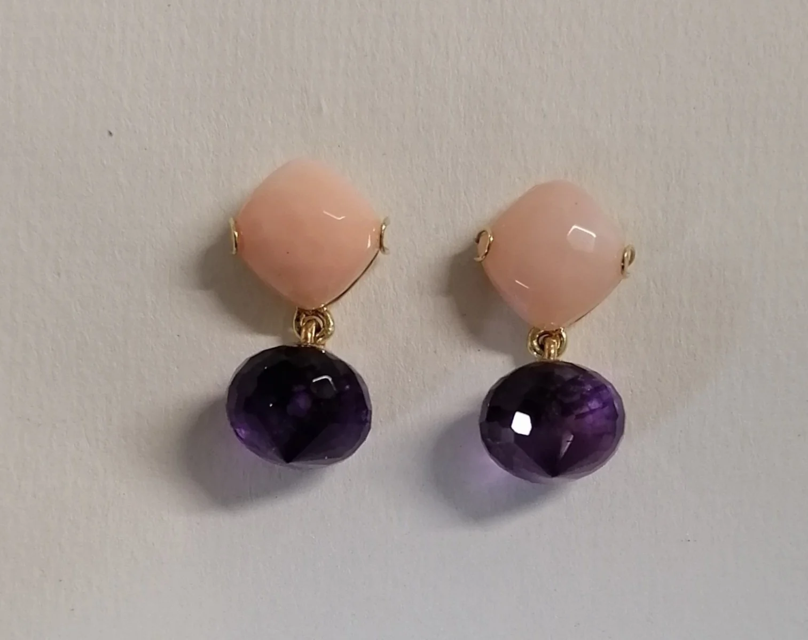
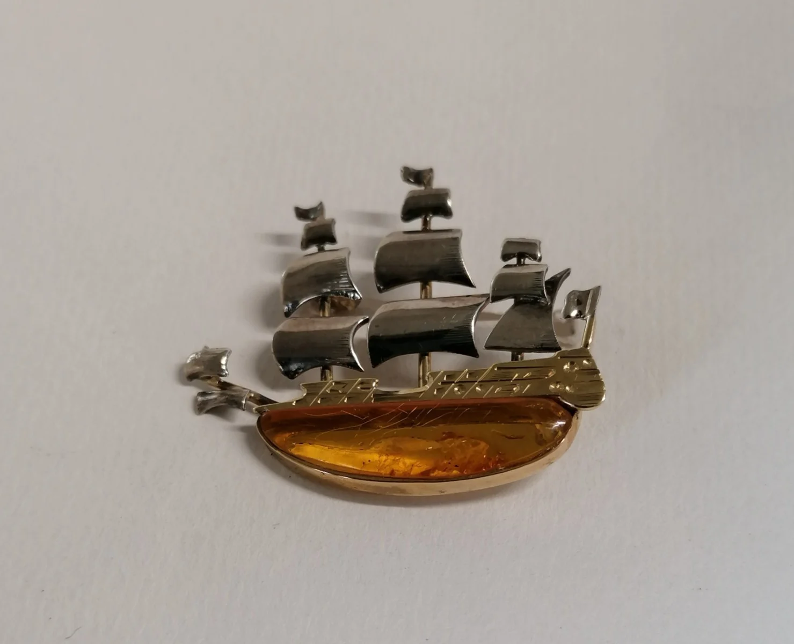
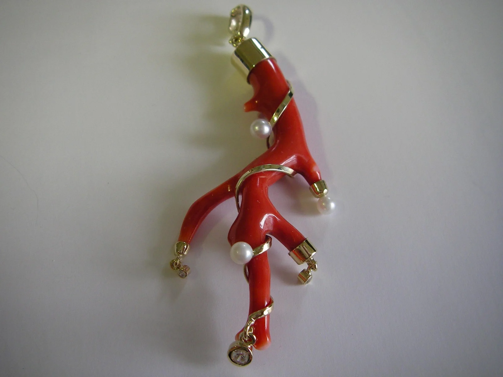
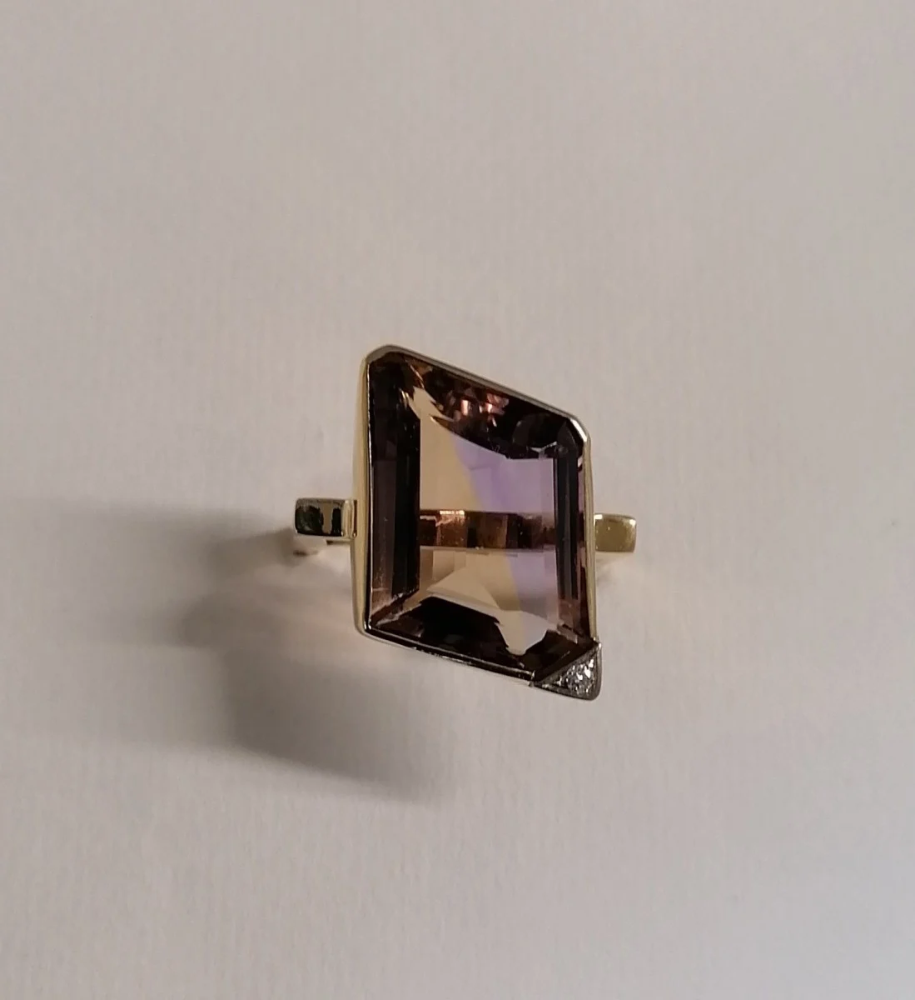
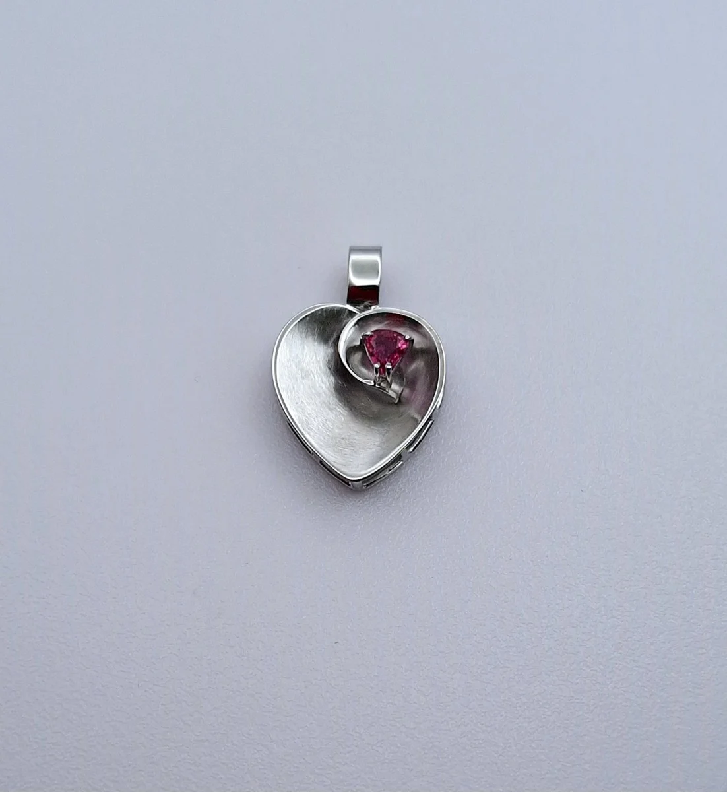

Goldschmiede Daniela Kreiter – Anfertigungen in Gold, Silber und Platin, Umarbeitungen, Reparaturen und Restaurierung von Antikschmuck.

Fotos: öffentliches Profil bei Kunsthandwerk Steiermark (WKO)Gold- und Silberschmiedemeisterin seit 1996 – mit eigener Werkstätte in Graz-Liebenau seit 1998.
Schmuck nach eigenem Design oder nach Ihrem Entwurf – in Gold, Silber und Platin.
Umarbeitung alter Schmuckstücke in eine neue Form.
Reparaturen Ihres Schmucks in der eigenen Werkstätte.
Behutsame Restaurierung von Antikschmuck.
Verarbeitet wird Recycling-Gold von einem zertifizierten Unternehmen. Ihr Bruchgold können Sie gerne mitbringen.

Fotos: öffentliches Profil bei Kunsthandwerk Steiermark (WKO)


Fotos: öffentliches Profil bei Kunsthandwerk Steiermark (WKO) – Arbeiten der Meisterin, nur zur Vorschau.